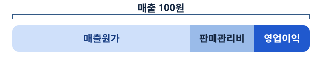

9차수 · 가온생활 실적 회의
원가가 오른 걸까, 팔린 제품이 달라진 걸까?
가온생활의 수익성이 낮아졌습니다. 팀의 첫 회의에서 무엇부터 조사할지 정합니다.
가상 기업 · 수업용 이미지
팀 회의
세 팀원이 서로 다른 발견을 가져왔다
매출 성장
+20%전기 대비 연결 매출
수익성 하락
−2%p전기 대비 영업이익률
경쟁사 격차
−1%p당기 이익률: 가온생활 − 나래생활
각 숫자가 전년 변화와 당기 격차 중 어떤 질문에 답하나요?
가온생활 사례 · 교육용 합성 자료
문제 정의
팀이 조사할 문제를 한 문장으로 써 보자
기업과 기간
누구의 어느 기간 실적을 볼까요?
지표와 변화 폭
어떤 지표가 얼마나 달라졌나요?
선정 기준
영향, 근거의 신뢰성, 자료 확보 가능성은 어떤가요?
팀이 먼저 확인할 문제를 고르고 이유를 적으세요.
가온생활 사례 · 교육용 합성 자료
가설
구매팀과 영업팀은 어떤 변화를 예상했을까?
구매팀
“제품별 원가율이 올랐을 수 있습니다.”
영업팀
“원가율이 높은 제품의 매출 비중이 커졌을 수 있습니다.”
각 가설을 지지하는 관찰이 무엇인지 자료를 열기 전에 적으세요.
가온생활 사례 · 교육용 합성 자료
개념
매출 100원에서 두 비용을 빼면

영업이익률 = 100% − 매출원가율 − 판매관리비율
이 사례에서 영업이익은 매출액에서 두 비용을 뺀 값입니다.
가온생활 사례 · 교육용 합성 자료
실습 A
2%p 하락을 비용 항목으로 설명하다
| 항목 | 전기 | 당기 |
|---|---|---|
| 매출액 | 100 | 120 |
| 매출원가 | 70.0 | 85.8 |
| 판매관리비 | 20.0 | 24.6 |
| 영업이익 | 10.0 | 9.6 |
각 비용을 해당 연도 매출액으로 나누고, 이익률 하락에 대한 기여를 %p로 적으세요.
가온생활 사례 · 교육용 합성 자료
해설
−1.5%p와 −0.5%p를 합하면 −2%p
매출원가율은 70.0%에서 71.5%로, 판매관리비율은 20.0%에서 20.5%로 올랐습니다.
가온생활 사례 · 교육용 합성 자료
자료 요청
두 가설을 검토할 자료를 요청하다
제품별 매출액
어떤 제품이 전체 매출에서 차지하는 비중을 계산할까요?
제품별 매출원가
제품 원가를 어떤 금액으로 나눌까요?
전사 매출액
제품별 합계와 전사 자료를 어떻게 대조할까요?
요청할 변수와 함께 기간과 집계 범위를 정하세요.
가온생활 사례 · 교육용 합성 자료
원자료
제품 A와 B의 자료가 도착했다
| 기간 | 제품 | 매출액 | 매출원가 |
|---|---|---|---|
| 전기 | A | 50 | 30 |
| 전기 | B | 50 | 40 |
| 당기 | A | 51 | 30.6 |
| 당기 | B | 69 | 55.2 |
제품별 금액을 더하면 전사 매출과 매출원가가 나오는지 확인하세요.
가온생활 사례 · 교육용 합성 자료
개념
매출 비중만큼 제품별 원가율을 반영한다
전체 원가율 = (A 매출 비중 × A 원가율) + (B 매출 비중 × B 원가율)
가중평균(weighted average)은 각 값에 그 값의 비중을 곱해 더합니다. 비중의 합은 100%입니다.
예시 25% × 40% + 75% × 60% = 55%
가온생활 사례 · 교육용 합성 자료
실습 B
전체 원가율 71.5%를 재현할 수 있을까?
| 기간 | 제품 | 매출액 | 매출원가 |
|---|---|---|---|
| 전기 | A | 50 | 30 |
| 전기 | B | 50 | 40 |
| 당기 | A | 51 | 30.6 |
| 당기 | B | 69 | 55.2 |
두 해의 제품별 원가율과 매출 비중을 구하고, 가중평균을 전사 원가율과 대조하세요.
가온생활 사례 · 교육용 합성 자료
해설
제품별 원가율은 같았고, B의 매출 비중은 커졌다
가온생활 사례 · 교육용 합성 자료
실습 C
비중이 그대로여도 71.5%가 나올까?
매출 비중
A와 B 각각 50%로 고정합니다.
B의 원가율
80%로 유지합니다.
A의 원가율
전체가 71.5%가 되는 값을 구합니다.
가중평균 식에 고정 조건을 넣고 A 원가율을 구하세요.
가온생활 사례 · 교육용 합성 자료
해설
같은 전체 원가율, 두 가지 제품별 상황
가상 관측 자료
0.425 × 60% + 0.575 × 80% = 71.5%
조건을 바꾼 실습
0.5 × 63% + 0.5 × 80% = 71.5%
전체 원가율만 알 때 두 상황을 구별하려면 어떤 자료가 필요할까요?
가온생활 사례 · 교육용 합성 자료
팀 실습
팀이 다음 회의에 요청할 자료를 정하다
| 가설 | 예상 관찰 | 실제 관찰 | 요청할 자료와 비교 |
|---|---|---|---|
| 제품별 원가율 상승 | 작성 | 작성 | 작성 |
| 판매 구성 변화 | 작성 | 작성 | 작성 |
B의 매출 비중 변화와 판매관리비율 상승을 조사할 다음 질문을 각각 적으세요.
가온생활 사례 · 교육용 합성 자료
다음 차수
“이 결과를 보고서 첫 장에 어떻게 쓰죠?”
핵심 문제 한 문장, 비용 기여도 그림, 가설 검토표를 다음 회의에 가져갑니다.
10차수 · 보고서 검토 회의 →가온생활 사례 · 교육용 합성 자료